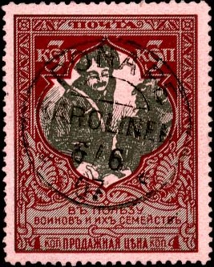
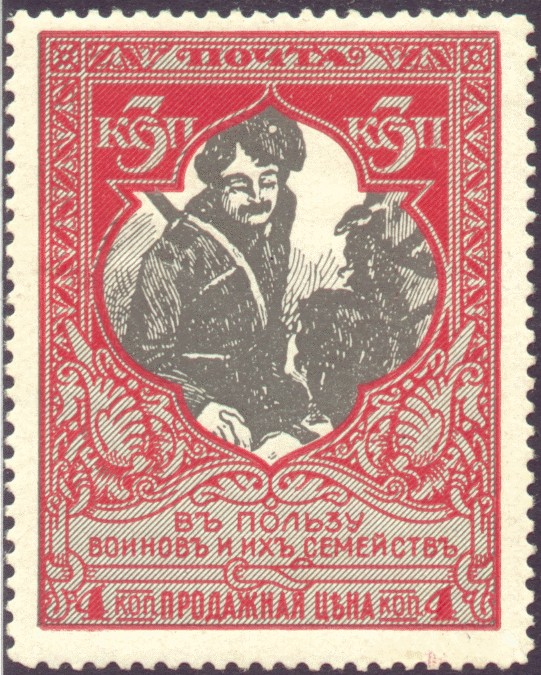
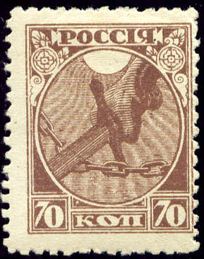

Return To Catalogue - Russia overview
Note: on my website many of the
pictures can not be seen! They are of course present in the
catalogue;
contact me if you want to purchase the catalogue.



1 (+1) k red and green on yellow (mediaeval russian heroe) 3 (+1) k red and grey (Kosak) 7 (+1) k brown and green on yellow (mother with children) 10 (+1) k blue and brown on blue (St.George killing the dragon)
Two different colour shades exist of all these stamps (except the 7 k). They were perforated 11 1/2, 12 1/2 or 13 1/2.
Value of the stamps |
|||
vc = very common c = common * = not so common ** = uncommon |
*** = very uncommon R = rare RR = very rare RRR = extremely rare |
||
| Value | Unused | Used | Remarks |
| 1 k | c | c | Both colour shades |
| 3 k | c | c | Both colour shades |
| 7 k | c | c | Both colour shades |
| 10 k | * | * | |
Numerous of these stamps were overprinted with 'ObPA3EIIb' (Specimen in Russian), they are not very rare.
(Reduced size)
The above overprint was used for sending stamps abroad (as the stamp commerce was controlled by the state in Sowjet Russia).
35 k blue 70 k brown
Value of the stamps |
|||
vc = very common c = common * = not so common ** = uncommon |
*** = very uncommon R = rare RR = very rare RRR = extremely rare |
||
| Value | Unused | Used | Remarks |
| 35 k | vc | vc | |
| 70 k | c | c | |
Overprinted with Russian text and value (surcharged for the Wolga hunger famine, 1922)

100 + 100 R on 70 k brown 250 + 250 R on 35 k blue
Value of the stamps |
|||
vc = very common c = common * = not so common ** = uncommon |
*** = very uncommon R = rare RR = very rare RRR = extremely rare |
||
| Value | Unused | Used | Remarks |
| 100 + 100 R on 70 k | c | * | Overprint in black, red or blue |
| 250 + 250 R on 35 k | c | c | Overprint in black, red or blue |

Overprint 'PCFCP UKPG
ObMbH 500 p.' on 70 k. This stamp was used as a tax on
letters with content stamps from or to foreign countries.
Apparently one could not send stamps or receive them without
paying taxes. A similar value 250 R on 35 k also exists.
1924 Postage due stamps, overprinted 'DOPLATA' and surcharged in russian (in red)

1 k on 35 k blue 3 k on 35 k blue 5 k on 35 k blue 10 k on 35 k blue 12 k on 70 k brown 14 k on 35 k blue 32 k on 35 k blue 40 k on 35 k blue
Value of the stamps |
|||
vc = very common c = common * = not so common ** = uncommon |
*** = very uncommon R = rare RR = very rare RRR = extremely rare |
||
| Value | Unused | Used | Remarks |
| 1 k on 35 k | c | c | |
| 3 k on 35 k | c | c | |
| 5 k on 35 k | c | c | |
| 10 k on 35 k | * | * | |
| 12 k on 70 k | * | * | |
| 14 k on 35 k | * | c | |
| 32 k on 35 k | * | * | |
| 40 k on 35 k | * | * | |
I've been told that the next stamp is a postal forgery:

(Left: postal forgery; Right: genuine stamp)
There are small differences in the letters and numbers when compared to a genuine stamp. For example the left '7' is clearly different the '0's have narrower center spaces, the 'P' is different and the inverted 'R' is different. This postal forgery is not mentioned in the book 'Postal Forgeries of the World' by H.G.L Fletcher.
{kind=link}
{kind=link}